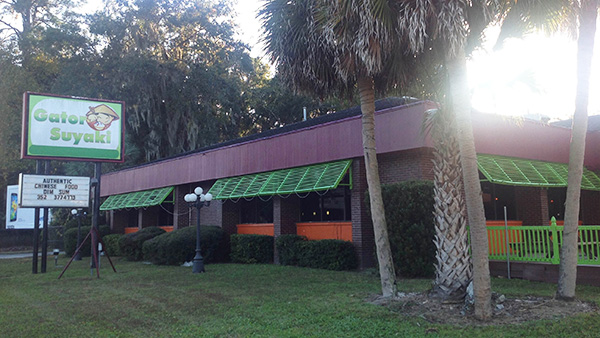
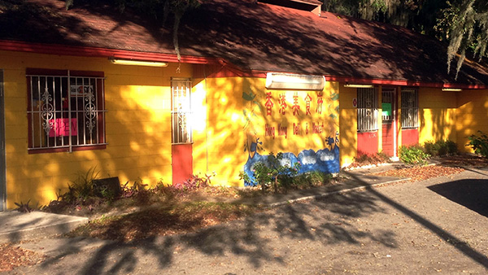
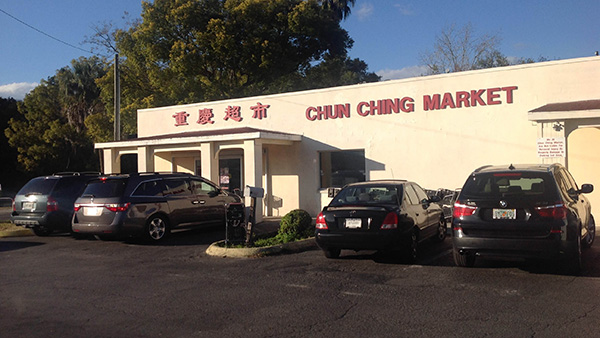

Here are some authentic Chinese food restaurants in Gainesville.
3830 SW 13th St, Gainesville, FL 32608 (352) 377-4773
1120 W University Ave, Gainesville, FL 32601 (352) 367-8999
1236 NW 21 Ave, Gainesville, FL 32609 (352) 505-0454
There are two Chinese markets in Gainesville.
1349 NW 23rd Ave, Gainesville, FL 32605 (352) 371-3085
418 NW 8th Ave, Gainesville, FL 32601 (352) 376-5885
There are some yummy and easy-cooking Chinese dishes that you can make by yourself at home. Here is an example. Every Chinese likes cooking it!